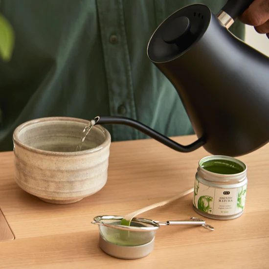
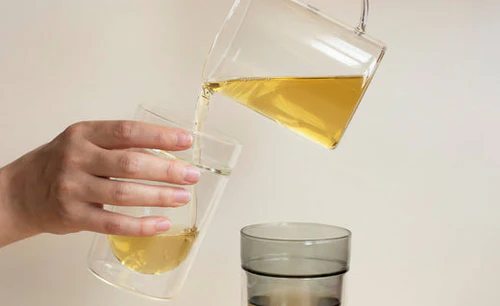
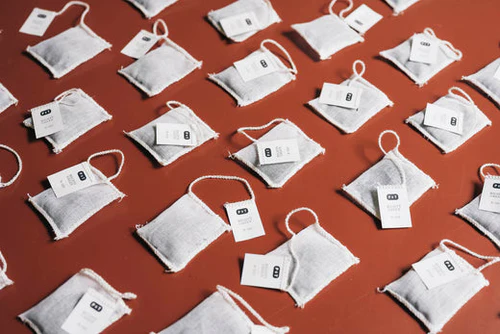

Tea Accessories
It is all about the little things: Here you can find all the accessories you need to prepare your cup of tea at home.
BLATTÉ Magazine
Tea Blends & more

The Perfect Tea Preparation: What Factors Really Matter!
This is why the water quality, brewing time, quantity, temperature and infusion space are so important when making tea.

Caffeine in Green Tea: A Small Discovery Journey
Drink green tea for a boost in the morning? Get to know the effects of caffeine.

Tea Bags vs. Loose-Leaf Tea Compared – Is There a Winner?
There are a few myths surrounding tea bags and loose tea, which we will get to the bottom of here.

Attention, Mindfulness: is it all hype or is there something to it?
Mindfulness is often hailed as a miracle cure - but what's really behind it?